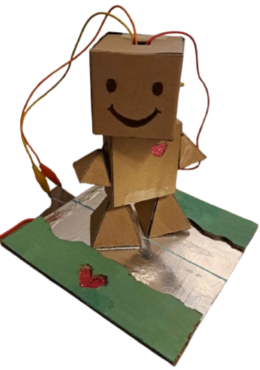

The Run Buddy is an exploration of how physical & digital elements come together to create an engaging, holistic experience. It made use of the P5 JavaScript library to create the digital aspects, and a Makey Makey kit for the physical components.
Run Buddy’s key theme is teaching kids heart health; using a cute character, bright visuals, and sound to retain attention.

There are two parts to the Run Buddy: the Buddy & board, and the website.
The physical components took a few iterations in order to ensure sizing was optimal for not only fitting the electronics, but made sense for a children’s toy.